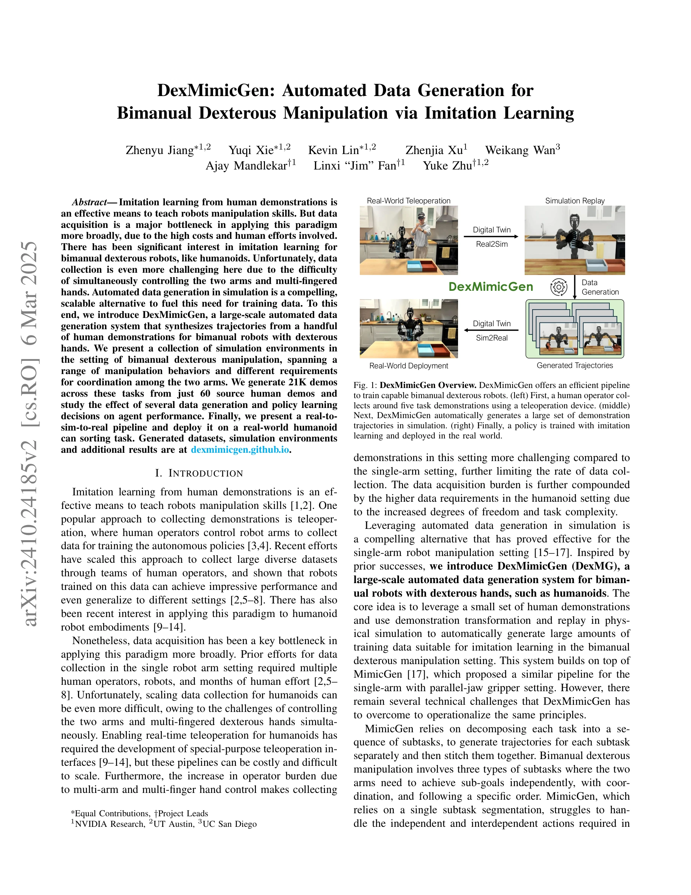
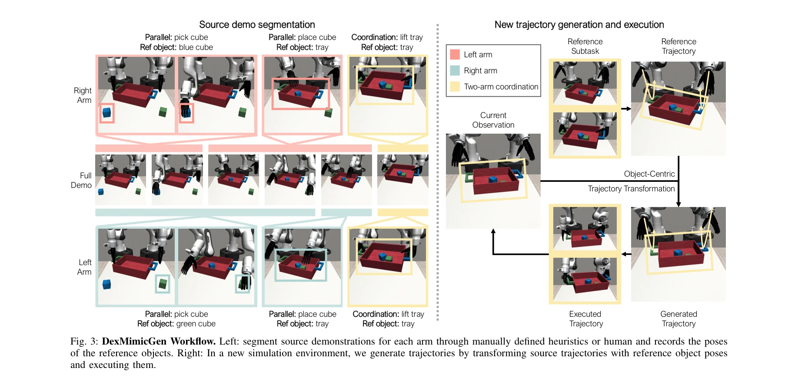

저자: Zhenyu Jiang, Yuqi Xie, Kevin Lin, Zhenjia Xu, Weikang Wan, Ajay Mandlekar, Linxi Fan, Yuke Zhu | 날짜: 2024-10-31 | URL: https://arxiv.org/abs/2410.24185

Fig. 1: DexMimicGen Overview. DexMimicGen offers an efficient pipeline
DexMimicGen은 소수의 인간 시연으로부터 simulation에서 자동으로 대규모 궤적 데이터를 생성하여 양손 dexterous 로봇 조작 학습을 위한 imitation learning 데이터 수집 병목을 해결하는 시스템이다.
Fig. 1: DexMimicGen Overview. DexMimicGen offers an efficient pipeline

Fig. 3: DexMimicGen Workflow. Left: segment source demonstrations for each arm through manually defined heuristics or hu
총평: DexMimicGen은 양손 dexterous 로봇 조작을 위한 자동 데이터 생성의 실질적인 해결책을 제시하며, MimicGen을 의미 있게 확장하고 실제 humanoid 배포로 그 효과를 입증했으나, 한계된 실제 작업 검증과 일반화 능력 평가가 필요하다.